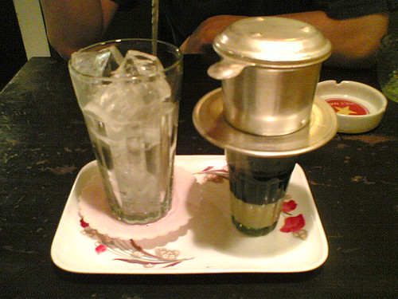

Viajes boutique a Asia · En español
Asia siempre estuvo en tu lista. Y no era falta de ganas — era no saber por dónde empezar. Nosotros lo resolvemos: tú solo viajas.
Modalidades
Tres formas de viajar con nosotros — desde acompañarte en persona hasta una asesoría uno a uno. Elige la que va contigo.

Recorre Asia con nosotros. Nuestras rutas estrella: te acompañamos en persona para vivir Asia desde adentro, cuidando cada detalle.

Viaja acompañado por coordinadores y guías de total confianza que hablan tu idioma. Tú solo disfruta; nosotros coordinamos desde aquí.

Tómate un café virtual con nosotros. Resolvemos tus dudas y ordenamos tu ruta para cualquier país del Sudeste Asiático, Corea y Japón: visados, itinerario, formas de pago y más.
Asia en movimiento
Un recorrido por los paisajes, sabores y momentos que te esperan — de los templos de Angkor a las calles de Hanói.

Detrás de la marca
Periodista venezolana y creadora de contenido con años viviendo en Vietnam. Asia Lo Posible nació de una idea simple: diseñar el viaje que yo le haría a alguien que quiero.
Conozco a los proveedores, hablo tu idioma y vivo aquí. Por eso cada hotel, cada ruta y cada detalle está pensado para que tú solo te dediques a vivir Asia, sin improvisar.
Sígueme en @kathmolinaresGuía boutique
Los lugares que recomendamos vivir al menos una vez. Cada uno, con su mejor época y su porqué.
 01
01 02
02 03
03 04
04 05
05 06
06 07
07 08
08 09
09 10
10Hablemos
Cuéntame qué sueñas y te respondo personalmente — normalmente en menos de 24 horas.
Blog de viajes
Todo lo que aprendí viviendo aquí, para que tú viajes mejor.

Clima por regiones, temporada alta y cuándo encontrar los mejores precios.

Cómo organizar tus días en los templos, horarios y el mejor lugar para el amanecer.
Del lujo al boutique con encanto: dónde alojarte según lo que buscas.